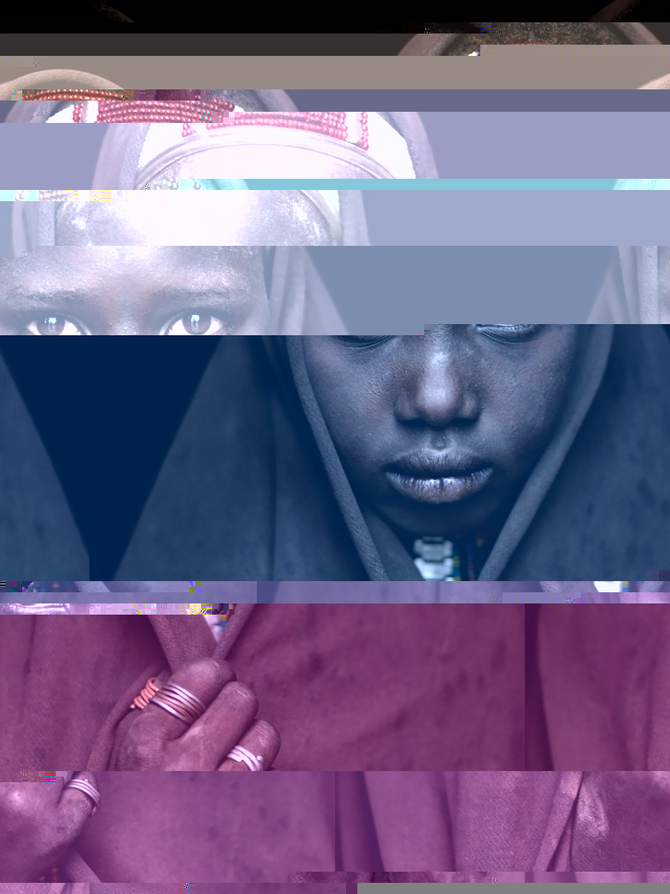

Reality is not as it always as it seems.
In an unprecedented era of false facts, misinformation, and conspiracy theories, teasing apart reality from click-bait is an everyday task. To explore this further, I have taken some familiar images from the internet and stochastically removed lines of code that produce the image thus distorting them. In this way, familiar images become distinct from their origin in a style reminescent of cubism.

Katy.
Onno.

Rokas Lab themed posters.
After seeing a twitter post (I sadly cannot find it again!) that showcased scientific research labs and their area of study, I decided to make some of my own for the lab of my PhD advisor, Antonis Rokas. Collectively, we study factors that influence phylogenetics (left), evolutionary and functional genomics of yeasts and molds (middle), and the evolution of human pregnancy (right).